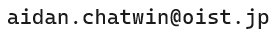

Welcome!
My name is Aidan Chatwin-Davies, and I am a staff scientist at the Okinawa Institute of Science and Technology. My research interests lie in quantum information science and quantum gravity, and I generally work on problems in which these fields intersect.
I was previously a NSERC postdoctoral fellow at the University of British Columbia and a postdoctoral fellow of the FWO at the Institute for Theoretical Physics at KU Leuven. I graduated from the California Institute of Technology in June 2018, where my Ph.D. advisor was Prof. Sean Carroll. Before that, my Master's advisor at the University of Waterloo was Prof. Achim Kempf.
チャットウィンデイヴィズ・エイデンと申します。科学者として沖縄科学技術大学院大学で働いています。私の研究テーマは量子情報科学と量子重力であり、これらの分野が交差する問題に取り組んでいます。
以前University of British Columbia、およびKU Leuven理論物理学研究所の研究員を努めていました。2018年6月Caltechを卒業し、顧問がProf. Sean Carrollでした。その前University of Waterlooの修士課程の顧問はProf. Achim Kempfでした。
Contact:

Or, if you want to send me a postcard...
Okinawa Institute of Science and Technology
1919-1 Tancha, Onna-son, Kunigami-gun, Okinawa
Japan 904-0497